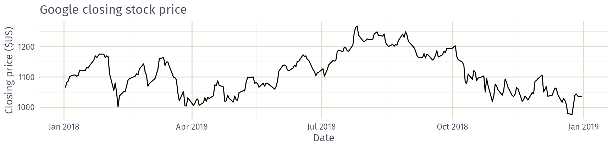
 AFRICAST
AFRICASTTidy time series & forecasting in R
ARIMA models
Session 6 of 10


workshop.f4sg.org/africastForecasting for Social Good
ARIMA models
ARIMA models
ARIMA models describe the autocorrelations in the data: how each observation relates to past observations and past errors.
An ARIMA model is rarely interpretable in terms of visible data structures like trend and seasonality. But it can capture a huge range of time series patterns.
Stationarity
Definition
If \(\{y_t\}\) is a stationary time series, then for all \(s\), the distribution of \((y_t,\dots,y_{t+s})\) does not depend on \(t\).
A stationary series is:
- roughly horizontal
- constant variance
- no patterns predictable in the long-term
Stationary?
- Yes
- No
Stationary?
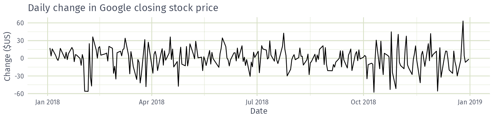
- Yes
- No
Random walks
A random walk, \(y_t = y_{t-1} + \varepsilon_t\) with white noise \(\varepsilon_t\), has no trend or seasonality.
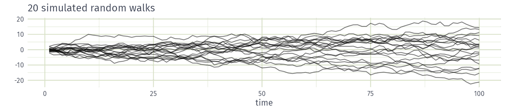
- Yes
- No
Differencing
Differences
First difference: \(y'_t = y_t - y_{t-1}\)
Second difference: \(y''_t = y'_t - y'_{t-1} = y_t - 2y_{t-1} + y_{t-2}\)
Seasonal difference: \(y_t - y_{t-m}\), where \(m\) is the seasonal period
- Differencing helps to stabilise the mean.
- A random walk is not stationary (its variance grows over time), but its first difference is white noise, which is stationary. The Google stock price behaves like a random walk.
- Occasionally a second difference is needed; it is almost never necessary to go further.
Autoregressive models
Autoregressive (AR) models
\[ y_{t} = c + \phi_{1}y_{t - 1} + \phi_{2}y_{t - 2} + \cdots + \phi_{p}y_{t - p} + \varepsilon_{t}, \] where \(\varepsilon_t\) is white noise. A multiple regression with lagged values of \(y_t\) as predictors.
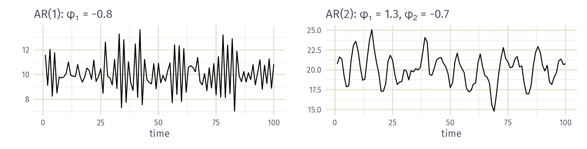
- Cyclic behaviour is possible when \(p\ge 2\).
Moving average models
Moving average (MA) models
\[ y_{t} = c + \varepsilon_t + \theta_{1}\varepsilon_{t - 1} + \theta_{2}\varepsilon_{t - 2} + \cdots + \theta_{q}\varepsilon_{t - q}, \] where \(\varepsilon_t\) is white noise. A multiple regression with lagged errors as predictors. Don’t confuse with moving average smoothing!
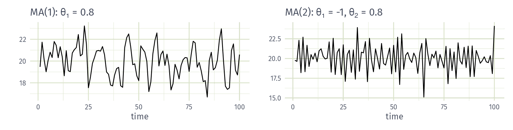
ARIMA models
Autoregressive moving average (ARMA) models
\[\begin{aligned} y_{t} &= c + \phi_{1}y_{t - 1} + \cdots + \phi_{p}y_{t - p} \\ & \qquad + \theta_{1}\varepsilon_{t - 1} + \cdots + \theta_{q}\varepsilon_{t - q} + \varepsilon_{t}. \end{aligned}\]
- Predictors include both lagged values of \(y_t\) and lagged errors.
Autoregressive integrated moving average models
- Combine ARMA model with differencing.
- \(d\)-differenced series follows an ARMA model.
- Need to choose \(p\), \(d\), \(q\) and whether or not to include \(c\).
ARIMA models
ARIMA(\(p, d, q\)) model
| AR: | \(p =\) order of the autoregressive part |
| I: | \(d =\) degree of first differencing involved |
| MA: | \(q =\) order of the moving average part. |
- White noise model: ARIMA(0,0,0)
- Random walk: ARIMA(0,1,0) with no constant
- Random walk with drift: ARIMA(0,1,0) with const.
- AR(\(p\)): ARIMA(\(p\),0,0)
- MA(\(q\)): ARIMA(0,0,\(q\))
Example: National populations
# A mable: 263 x 2
# Key: Country [263]
Country arima
<fct> <model>
1 Afghanistan <ARIMA(4,2,1)>
2 Albania <ARIMA(0,2,2)>
3 Algeria <ARIMA(2,2,2)>
4 American Samoa <ARIMA(2,2,2)>
5 Andorra <ARIMA(2,1,2) w/ drift>
6 Angola <ARIMA(4,2,1)>
7 Antigua and Barbuda <ARIMA(2,1,2) w/ drift>
8 Arab World <ARIMA(0,2,1)>
9 Argentina <ARIMA(2,2,2)>
10 Armenia <ARIMA(3,2,0)>
# ℹ 253 more rowsExample: National populations
Series: Population
Model: ARIMA(0,2,1)
Coefficients:
ma1
-0.661
s.e. 0.107
sigma^2 estimated as 4.063e+09: log likelihood=-699
AIC=1401 AICc=1402 BIC=1405With \(d=2\) the MA(1) model is for the second differences \(y_t - 2y_{t-1} + y_{t-2}\), so \[y_t = 2y_{t-1} - y_{t-2} - 0.661 \varepsilon_{t-1} + \varepsilon_t, \qquad \varepsilon_t \sim \text{NID}(0, 4.06\times10^9)\]
Example: National populations
Australia’s population model is ARIMA(0,2,1) with no constant. What shape will its long-term forecasts take?
- Flat line
- Straight line
- Quadratic curve
- Decay to zero
Understanding ARIMA models
\(c\) is the constant in the ARMA model for the \(d\)-times differenced series.
- If \(c=0\) and \(d=0\), the long-term forecasts will go to zero.
- If \(c=0\) and \(d=1\), the long-term forecasts will go to a non-zero constant.
- If \(c=0\) and \(d=2\), the long-term forecasts will follow a straight line.
- If \(c\ne0\) and \(d=0\), the long-term forecasts will go to the mean of the data.
- If \(c\ne0\) and \(d=1\), the long-term forecasts will follow a straight line.
- If \(c\ne0\) and \(d=2\), the long-term forecasts will follow a quadratic trend.
Understanding ARIMA models
Forecast variance and \(d\)
- The higher the value of \(d\), the more rapidly the prediction intervals increase in size.
- For \(d=0\), the long-term forecast standard deviation will go to the standard deviation of the historical data.
Example: National populations
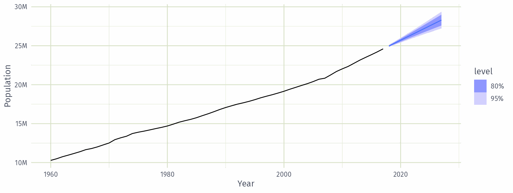
How does ARIMA() work?
Hyndman and Khandakar (JSS, 2008) algorithm
- Select the number of seasonal differences \(D\) via a seasonal strength test, then the number of differences \(d\) via KPSS tests.
- Select \(p\), \(q\) (and \(P\), \(Q\) for seasonal models) and inclusion of \(c\) by minimising AICc.
- Use stepwise search to traverse model space.
How does ARIMA() work?
\[\text{AICc} = -2 \log(L) + 2(p+q+k+1)\left[1 + \frac{(p+q+k+2)}{T-p-q-k-2}\right]\] where \(L\) is the maximised likelihood fitted to the differenced data, \(k=1\) if \(c\neq 0\) and \(k=0\) otherwise.
- Yes
- No
How does ARIMA() work?
- Fit ARIMA\((2,d,2)\), ARIMA\((0,d,0)\), ARIMA\((1,d,0)\) and ARIMA\((0,d,1)\). The lowest AICc becomes the current model.
- Fit variations of the current model: vary \(p\), \(q\) or both by \(\pm1\), and include/exclude \(c\). The lowest AICc becomes the current model.
- Repeat step 2 until no lower AICc can be found.
- Yes
- No
How does ARIMA() work?
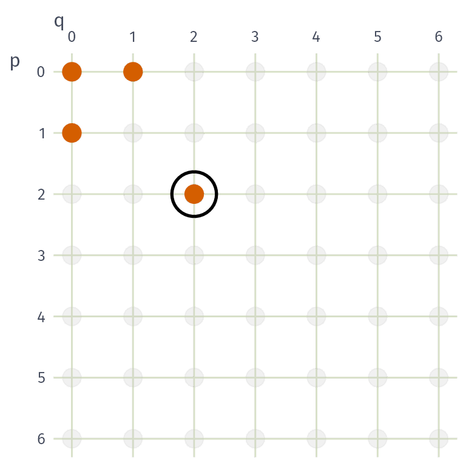
Step 1: fit the four starting models.
ARIMA\((2,d,2)\) has the lowest AICc, so it becomes the current model (circled).
How does ARIMA() work?
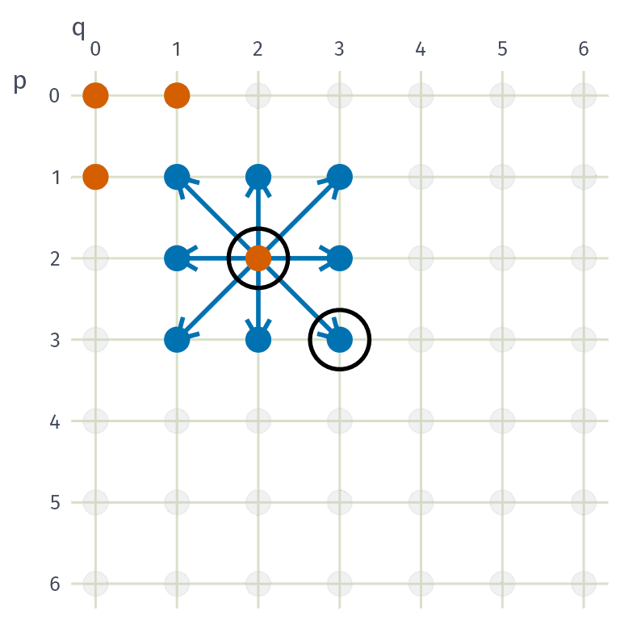
Step 2: fit the neighbours of ARIMA\((2,d,2)\).
ARIMA\((3,d,3)\) has a lower AICc, so it becomes the current model.
How does ARIMA() work?
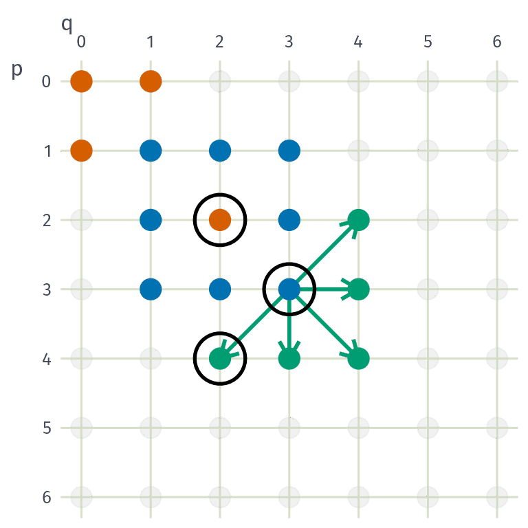
Step 2 (repeated): fit the neighbours of ARIMA\((3,d,3)\).
ARIMA\((4,d,2)\) has a lower AICc, so it becomes the current model.
How does ARIMA() work?
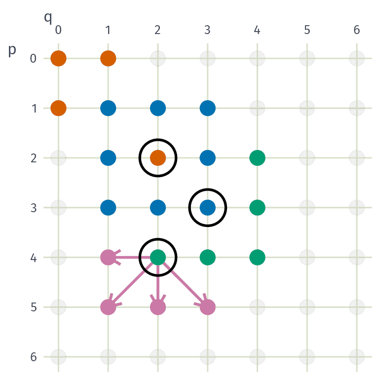
Step 2 (repeated): fit the neighbours of ARIMA\((4,d,2)\).
None has a lower AICc, so the search stops and ARIMA\((4,d,2)\) is selected.
The search is local, so a model with a lower AICc may exist elsewhere in the grid.
Seasonal ARIMA models
Seasonal ARIMA models
\[\text{ARIMA}~\underbrace{(p,d,q)}_{\text{Non-seasonal part}}~\underbrace{(P,D,Q)_m}_{\text{Seasonal part}}\]
- \(m =\) seasonal period (e.g. 12 for monthly data, 4 for quarterly data).
- \(d\) first differences, \(D\) seasonal differences
- \(p\) AR order, \(q\) MA order
- \(P\) seasonal AR order, \(Q\) seasonal MA order
Seasonal and non-seasonal terms combine multiplicatively
Corticosteroid drug sales
Monthly Australian Pharmaceutical Benefits Scheme (PBS) expenditure on corticosteroid (H02) drugs.
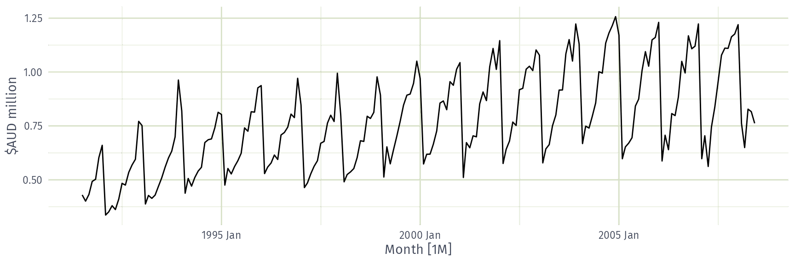
Corticosteroid drug sales: log transform
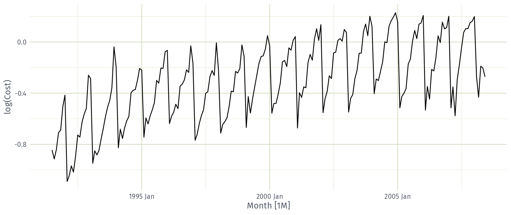
Corticosteroid drug sales: seasonal difference
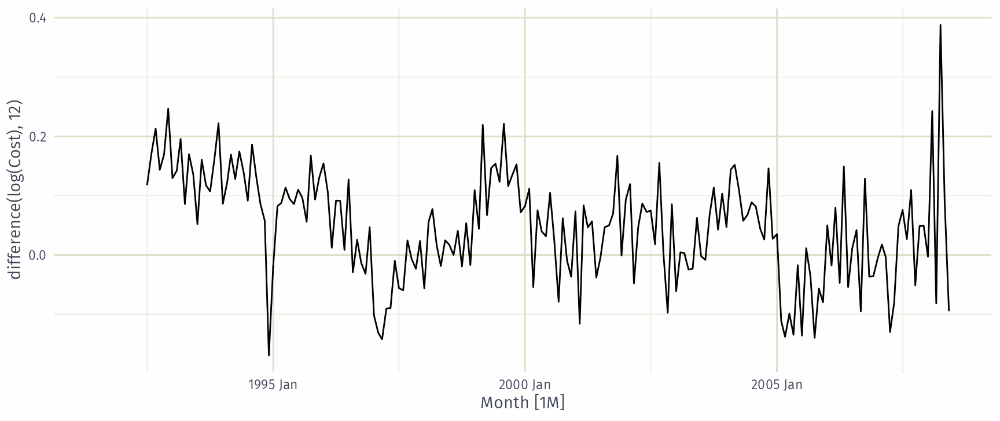
Corticosteroid drug sales: seasonal and first difference
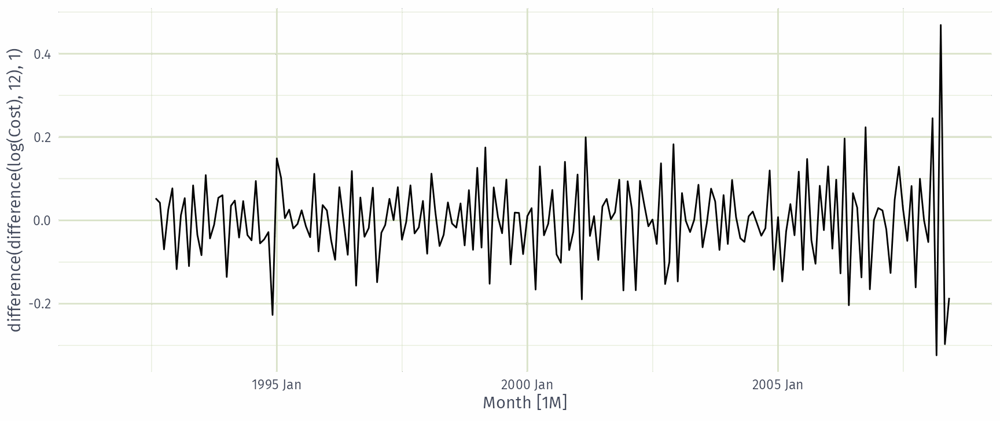
Corticosteroid drug sales: automatic ARIMA
Series: Cost
Model: ARIMA(2,1,0)(0,1,1)[12]
Transformation: log(Cost)
Coefficients:
ar1 ar2 sma1
-0.8491 -0.4207 -0.6401
s.e. 0.0712 0.0714 0.0694
sigma^2 estimated as 0.004387: log likelihood=245
AIC=-483 AICc=-483 BIC=-470\(d=1\) and \(D=1\) match the differencing above, leaving an AR(2) and a seasonal MA(1) at lag 12.
Corticosteroid drug sales: manual ARIMA
Specify the orders with pdq() and PDQ(), and the constant with 0 + (exclude) or 1 + (include).
Series: Cost
Model: ARIMA(2,1,0)(0,1,1)[12]
Transformation: log(Cost)
Coefficients:
ar1 ar2 sma1
-0.8491 -0.4207 -0.6401
s.e. 0.0712 0.0714 0.0694
sigma^2 estimated as 0.004387: log likelihood=245
AIC=-483 AICc=-483 BIC=-470Orders can be chosen manually by inspecting the ACF and PACF of the differenced data.
Corticosteroid drug sales: forecasts
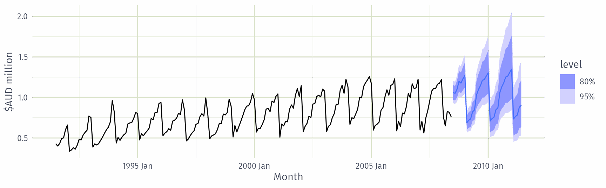
Corticosteroid drug sales: searching harder
By default ARIMA() takes shortcuts to keep model selection fast.
Search options
stepwise = FALSE: fit every model within the order limit, not just the stepwise path.approximation = FALSE: estimate with the exact likelihood rather than an approximation.order_constraint: limit the total number of AR and MA terms considered.
A wider search is slower, but may find a model with a lower AICc.
Corticosteroid drug sales: searching harder
Series: Cost
Model: ARIMA(4,1,1)(2,1,2)[12]
Transformation: log(Cost)
Coefficients:
ar1 ar2 ar3 ar4 ma1 sar1 sar2 sma1 sma2
-0.0425 0.210 0.202 -0.227 -0.742 0.621 -0.383 -1.202 0.496
s.e. 0.2167 0.181 0.114 0.081 0.207 0.242 0.118 0.249 0.213
sigma^2 estimated as 0.004049: log likelihood=254
AIC=-489 AICc=-487 BIC=-456Same differencing and transformation, so the AICc is comparable: \(-487\) vs \(-483\) for the automatic model, using nine coefficients instead of three.
Corticosteroid drug sales: residuals
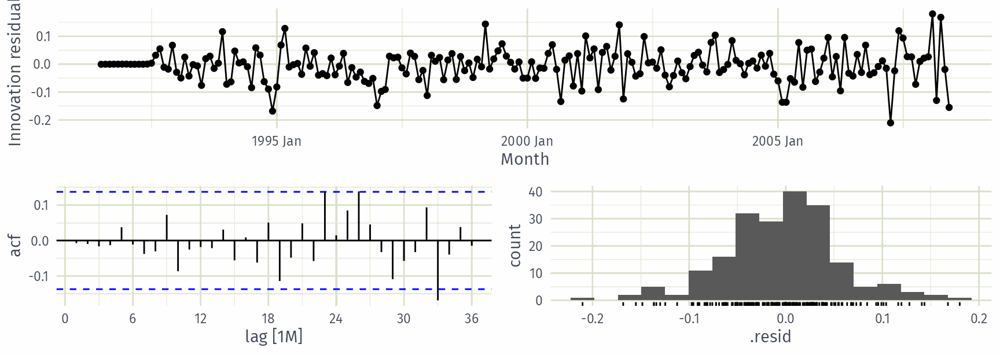
Corticosteroid drug sales: residuals
Ljung-Box tests, with dof set to the number of estimated coefficients.
# A tibble: 2 × 3
.model lb_stat lb_pvalue
<chr> <dbl> <dbl>
1 auto 59.3 0.00332
2 best 36.5 0.106 The automatic model leaves autocorrelation in its residuals; the wider search does not, so we prefer it.
Corticosteroid drug sales: forecasts
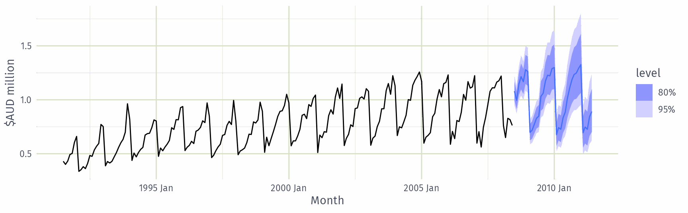
Forecast ensembles
Forecast ensembles
- Fits three models to each of the 304 tourism series (this takes a while).
- Ensemble forecast
mixedis a simple average of the three fitted models. forecast()will produce distributional forecasts taking into account the correlations between the forecast errors of the component models.
Forecast ensembles
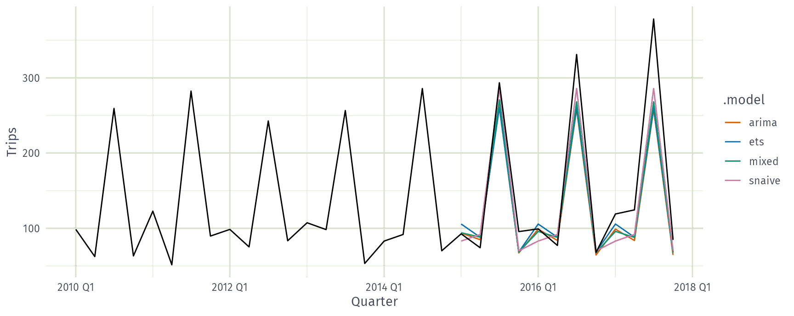
Forecast ensembles
Accuracy on the 2015–2017 test set, averaged across all series.
# A tibble: 4 × 3
.model RMSE MASE
<chr> <dbl> <dbl>
1 mixed 19.8 0.997
2 ets 20.2 1.00
3 snaive 21.5 1.17
4 arima 21.9 1.06 Averaging lets errors from different models partially cancel, and reduces the risk of picking the wrong model.